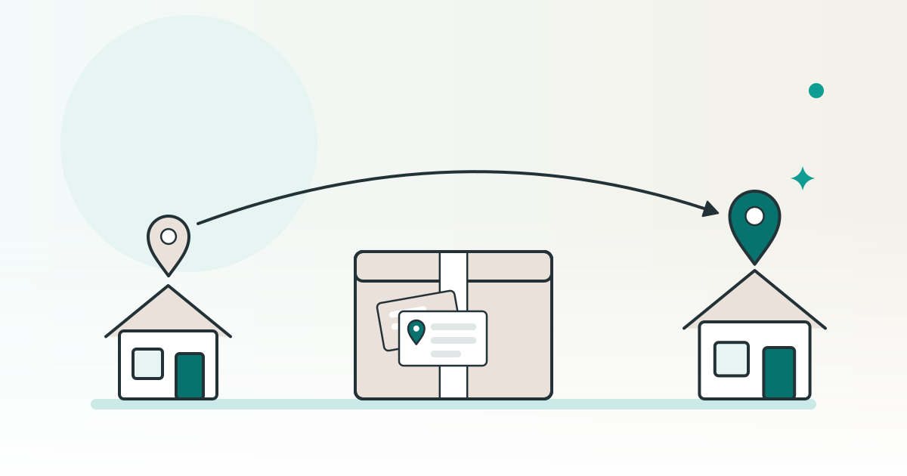

SHOPKIT コラム
ネットショップの住所変更対応発送前後の照合と記録

注文後の住所変更は、該当する注文と発送状況を確かめてから、変更できるかを判断します。連絡が届いたことと、荷物の送り先が変わったことは別です。購入者とのやり取り、注文記録、送り状まで変更が届いたかを照らすために、お店を始める前に決めておきたい手順をまとめます。
この記事は、完成品のネットショップを販売している SHOPKIT が書いています。
この記事で分かること
- 住所変更を受けたときに照らす注文情報
- 発送前と発送後で、次の確認先を分ける方法
- 受付と変更完了を分けて記録する項目
注文後の住所変更は、誰のどの注文かを先に照らす
新しい住所を入力する前に、連絡と対象の注文を結び付けます。注文番号や、注文時に登録された連絡先との対応を確かめましょう。同じ名前の注文があっても、名前だけで選んで変更しないようにします。
普段と違う連絡先から届いた変更依頼は、注文時の連絡先へ確認するなど、確認できる経路を使う手順にします。どの情報で照合するかをお店の中で決め、必要な情報がそろう前に荷物の行き先を書き換えないことが大切です。
注文を特定するためといって、関係のない情報まで集める形にはしません。注文番号や登録済みの連絡先で確認する手順と、判断に迷う申出を担当者へ回す手順を用意します。お客様が公開のコメント欄へ住所を書き込まないよう、連絡する窓口も案内しましょう。
| 照らすこと | 見る記録 | 止めて確かめる場面 |
|---|---|---|
| 対象の注文 | 注文番号、商品、注文時の連絡先 | 似た注文がある、連絡先との対応が分からない |
| 荷物の状態 | 作業中か、送り状を作ったか、引渡し済みか | 管理画面と担当者の記録が合わない |
| 変更する範囲 | 郵便番号、住所、建物・部屋、宛名 | 住所だけでなく受取人も変わっている |
| 反映する先 | 注文記録、作業用の控え、送り状、連絡履歴 | 古い送り状や控えが作業場所に残る |
発送前は、古い送り状が残っていないかを見る
発送前でも、管理画面を直すだけで作業を終えないようにします。荷物を包む人が印刷した控えを見ているなら、その控えにも変更が伝わる必要があります。送り状を既に作った場合は、作り直す対象をはっきりさせてください。
- 該当する出荷作業を止める。注文を特定したら、照合が済むまで古い情報のまま発送されないようにします。
- 変更前後を残す。どの欄が変わったかと、依頼を受けた日時を記録します。
- 作業に使う物をそろえる。注文記録、控え、送り状の送り先を同じ内容にします。
- 照合してから作業を再開する。新しい送り状と注文を合わせ、古い物を使わない状態にしてから進めます。
変更前の住所を履歴に残す場合も、作業で使う最新の送り先とは分けて表示します。古い情報が見えること自体より、それを今回の送り先として使ってしまう配置が問題です。履歴の保管と、出荷に使う表示を分けましょう。
再開前のポイント：お客様へ返事をしたかどうかだけで判断せず、実際の送り状が変わっているかを見ます。「対応中」と「反映済み」を別の状態として記録してください。
発送後は、配送会社へ確かめる内容をそろえる
配送会社へ荷物を渡した後は、お店の管理画面だけで行き先を変えた扱いにしません。伝票番号と現在の状態をそろえ、変更を相談できるか、誰から申し出るかを利用した配送会社の窓口へ確かめます。
変更の可否、手続き、費用、配送への影響は、使っている方法と荷物の状況に応じて確認します。別の発送で受け付けてもらえた経験を、今回も同じ結果になる根拠にしないようにしましょう。確認した窓口と回答を残してから、お客様への説明を組み立てます。
購入者には、変更の依頼を受けたこと、現在確かめている内容、次に連絡する方法を分けて伝えます。相談した段階で「変更しました」と完了を約束せず、反映を確かめた後の連絡と区別してください。
関連：ネットショップの送料の決め方｜発送方法・梱包と先に伝えること
住所の訂正は、入力時の照合と履歴の扱いも決める
個人情報保護委員会の「通則編」は、利用の目的に必要な範囲で、個人データの内容を正確で新しい状態に保つよう努めることを説明しています。入力内容の照合や、誤りを直す手順、保存する期間を決めることなどが示されています。出典：個人情報保護委員会「通則編」のデータ内容の正確性（2026年10月25日確認）。
今回の送り先の変更と、次の注文で使う登録住所の変更は分けて扱いましょう。今回だけ別の場所に送りたいという希望もあるためです。どの範囲を変更したかを返事に書き、本人が希望していない登録情報まで一緒に変えないようにします。
変更履歴を残す場所は、住所を扱う担当者が分かる形にします。作業が終わった紙や写真を、別のお客様の荷物に入れないよう片付けるところまでが手順です。個人情報の保存や閲覧の決まり全体は、別の記事で整理しています。
関連：ネットショップのお客様の個人情報｜守ることとプライバシーポリシーに書くこと
お店を買って始める前に、変更時の担当を決めておく
SHOPKITのサービスページは、管理画面の使い方、注文から発送までの手順をマニュアルの内容として挙げています。出典：お渡しするもの（2026年10月15日時点の記載）。
完成品のお店を検討するときも、通常の注文の流れを見ながら、途中で変更が来たら自分がどこを止め、どこへ連絡するかを尋ねましょう。管理画面で変える項目と、配送を手配する相手への連絡を分けて理解しておくと、準備すべき記録が具体的になります。
関連：ネットショップを一人で運営するには｜毎日の作業と、続けるための決めごと
よくある質問
注文後の住所変更は、連絡を受けたらすぐに入力し直しますか？
先に対象の注文と、変更を申し出た連絡先との対応を確かめます。発送状況も照らし、確認が済む前に送り先を書き換えない手順にしましょう。
送り状を作った後でも、画面の住所だけ直せばよいですか？
管理画面に加え、作業用の控えや送り状も照らします。古い送り状で発送しない状態にしてから作業を再開し、対応中と反映済みを分けて記録してください。
荷物を渡した後の住所変更は、どこへ確かめますか？
伝票番号と荷物の状態をそろえ、利用した配送会社の窓口へ手続きや変更の可否を確かめます。相談した段階と、反映を確認した段階をお客様への連絡でも分けましょう。
※ 公的資料は2026年10月25日に確認しました。配送会社ごとの転送条件・費用や、個別の変更可否は示していません。SHOPKITのマニュアルの説明は2026年10月15日時点のサービスページの記載です。